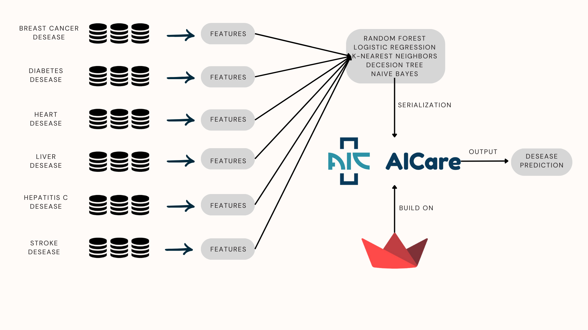
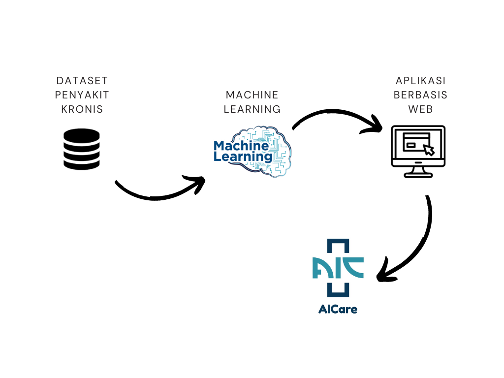
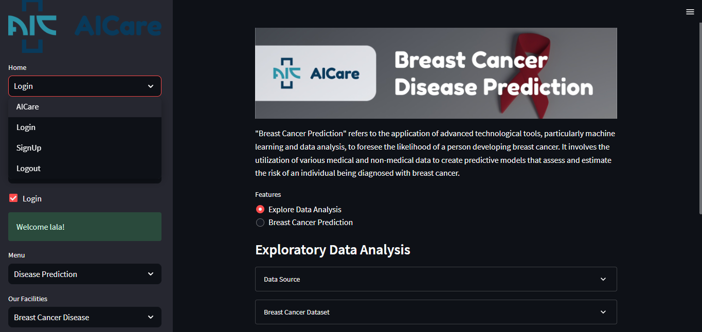

Predictive modeling plays a pivotal role in forecasting chronic and acute diseases, enabling early identification, intervention, and personalized healthcare. Chronic disease prediction involves the utilization of advanced data analysis techniques, notably machine learning, to assess an individual's susceptibility to long-lasting conditions such as heart disease, diabetes, chronic respiratory illnesses, and autoimmune disorders. These models analyze multifaceted medical records, lifestyle factors, and genetic markers to estimate the risk of developing chronic diseases over an extended period, aiding in proactive management and tailored interventions. To aid healthcare professionals in achieving rapid and accurate diagnoses, one of the methods utilized is machine learning. However, almost no healthcare personnel possess the expertise in employing machine learning methods. Therefore, AiCare is introduced to assist medical professionals in implementing machine learning for diagnosing both chronic and acute diseases. In previous research, AiCare was developed for chronic diseases. In this study, AiCare Phase II will be further developed by adding several additional features to make AiCare more visually appealing, with the hope that it will attract more users in the future.
"Web-based application for predicting chronic diseases."
Horas M. S. https://aicare.streamlit.app
Several steps of project work
Implementation into website applications
AiCare website-based application view
